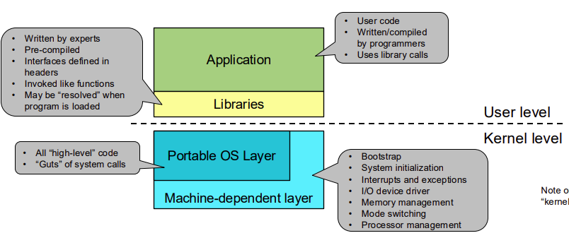

Operating System
Kernal \(\approx\) OS
Software of a Unix System

Application
- user code
- use library calls
Libraries
- pre-compiled
- written by experts
Portable OS Layer
- all high level codes
- system calls
machine-dependent layer
- bootstrap
- IO device driver
- interrupts and exceptions
- mem mangement
Protection
CPU modes:
- Kernal mode - can run all instructions
- User mode - can only run non-priviledged instructions
- Mode is indicated by a mode bit in a protected CPU control register
Priviledgd Instructions
a subset of instructions that can only run in kernal mode
- the CPU checks mode bit when priviledged instructions execute
- if the mode bit is set to user mode, the CPU will raise an exception
Priviledged Instructions Can DO:
- Directly access IO devices (disk, network, etc.)
- manipulate memory management (page tables, etc.)
- manipuate CPU protected control registers (mode bit, etc.), preventing user code from changing the mode bit
HLT: halts the CPU
Memory Protection
prevents user code from accessing kernal memory, Seperation of user and kernal memory
should programs trust OS?
may/may not be trusted, but the OS should not trust the programs
OS Events
unnatural change in the flow of control
- stops current execution
- change mode, context or both
OS defines handlers for these events, event handlers are executed in kernal mode after system booted, all entry to kernal occurs as result of an event
Os
OS itself is a big event handler
OS only executes in response to an event
interrupts
cause by external event
exceptions
caused by program execution instructions - fault: eg: try execute priviledged instruction in user mode - system calls: eg: request kernal service
events can be unxpected or deliberate